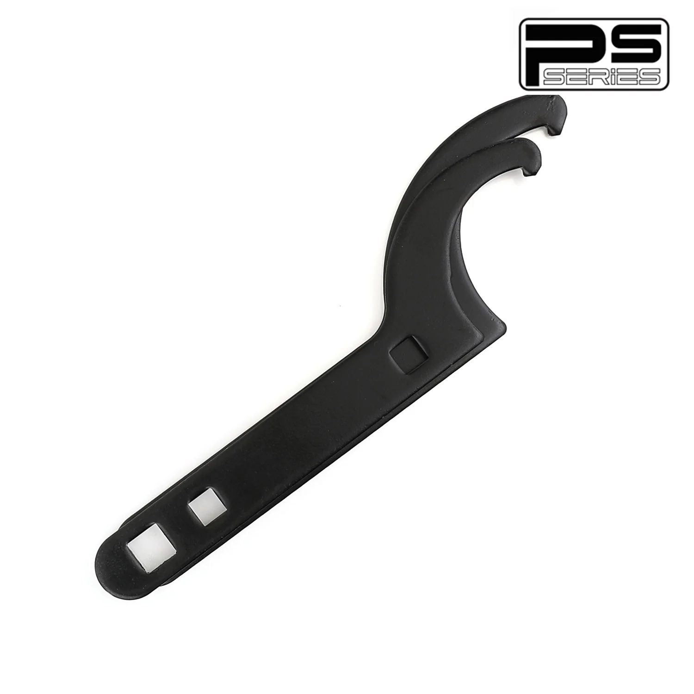

1 / 5FAPO Pair of Universal zawieszenie gwintowane Adjustable Tool Spanner Wrench Black PS000010
Para uniwersalnych kluczy nastawnych do gwintów FAPO, czarna Cechy Działa ze wszystkimi cewkami FAPO Malowane proszkowo, aby zapobiec rdzy Cięcie laserowe zapewnia dokładność i precyzję Montaż Kompatybilny z nieoryginalnymi gwintami ze specyfikacją żerdzi 3-1/4" (średnica zewnętrzna) Klucze do nakrętek z regulacją tulejową są kompatybilne z wieloma regulowanymi nawojami na rynku wtórnym (nie dla wszystkich pojedyncz…
FAPO Pair of Universal Coilover Adjustable Tool Spanner Wrench Black Features Works on all FAPO coilovers Powder coated to prevent rust Laser cut for accuracy and precision Fitment Compatible with aftermarket coilovers with perch spec of 3-1/4" (outer diameter) Adjustable Sleeve Coilover Spanner Wrenches are compatible with many aftermarket adjustable coilovers (not for all single coilovers of other brands) Package Includes 2 × wrenches (as pictured) Warranty All items carry standard 1 year warranty from date of purchase. Proof of purchase required. For warranty claims, please provide order number, images and documentation of the issue.
599,99 PLN
Opis produktu
Para uniwersalnych kluczy nastawnych do gwintów FAPO, czarna
Cechy
- Działa ze wszystkimi cewkami FAPO
- Malowane proszkowo, aby zapobiec rdzy
- Cięcie laserowe zapewnia dokładność i precyzję
Montaż
- Kompatybilny z nieoryginalnymi gwintami ze specyfikacją żerdzi 3-1/4" (średnica zewnętrzna)
- Klucze do nakrętek z regulacją tulejową są kompatybilne z wieloma regulowanymi nawojami na rynku wtórnym (nie dla wszystkich pojedynczych nawojów nawojowych innych marek)
Pakiet zawiera
- 2 × klucze (jak na zdjęciu)
Gwarancja
Wszystkie produkty objęte są standardową roczną gwarancją liczoną od daty zakupu. Wymagany dowód zakupu. W przypadku roszczeń gwarancyjnych należy podać numer zamówienia, zdjęcia i dokumentację problemu.
FAPO Pair of Universal Coilover Adjustable Tool Spanner Wrench Black
Features
- Works on all FAPO coilovers
- Powder coated to prevent rust
- Laser cut for accuracy and precision
Fitment
- Compatible with aftermarket coilovers with perch spec of 3-1/4" (outer diameter)
- Adjustable Sleeve Coilover Spanner Wrenches are compatible with many aftermarket adjustable coilovers (not for all single coilovers of other brands)
Package Includes
- 2 × wrenches (as pictured)
Warranty
All items carry standard 1 year warranty from date of purchase. Proof of purchase required. For warranty claims, please provide order number, images and documentation of the issue.
FAPO Polska
Ten produkt obsługujemy lokalnie
Autoryzowana obsługa
FAPO Polska prowadzi katalog, kontakt i zamówienia bez odsyłania klienta do zewnętrznych sklepów.
Dobór po aucie
Sprawdzamy dopasowanie produktu do pojazdu, rocznika i wersji przed finalizacją zamówienia.
Wsparcie po zakupie
Masz kontakt w Polsce w sprawach zamówień, wysyłki, gwarancji i zwrotów.